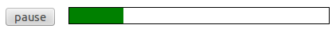

This article provides:
The code below is an example of a basic audio implementation using HTML5:
<audio controls>
<source src="audiofile.mp3" type="audio/mpeg">
<source src="audiofile.ogg" type="audio/ogg">
<!-- fallback for non supporting browsers goes here -->
<p>Your browser does not support HTML5 audio, but you can still
<a href="audiofile.mp3">download the music</a>.</p>
</audio>
You can also use an MP4 file instead of MP3. MP4 files typically contain AAC encoded audio. You can use type="audio/mp4". (Currently, browsers that support mp3 also support mp4 audio).
src and type.
src contains the path to the audio file to be loaded (relative or absolute).type is used to inform the browser of the file type. If omitted, most browsers will attempt to guess this from the file extension.</audio> tag. In this case, we've provided a simple paragraph including a link to download the audio directly.controls attribute on the {{ htmlelement("audio") }} element is specified when we require the browser to provide us with default playback controls. If you don't specify this attribute, no controls will appear — and you will instead have to create your own controls and program their functionality using the Media API (see below). However, that can be a good approach, because the default controls look different among various browsers. So creating your own controls ensures a consistent look for the controls across all browsers.Now we've looked at a basic example, let's now explore the different aspects of HTML5 audio in more detail.
We can specify a number of attributes with the audio tag to further determine the way audio is initialized.
Specifying autoplay will cause the audio to start playing as soon as possible and without any user interaction — in short, the audio will autoplay.
<audio autoplay> ... </audio>
This value is often ignored on mobile platforms, and its use is not recommended unless really necessary. Auto-playing audio (and video) is usually really annoying. Plus browsers have policies that will block autoplay entirely in many situations. See the Autoplay guide for media and Web Audio APIs for details.
The loop attribute will ensure that upon getting to the end of the audio clip, the audio clip will loop back to the beginning and start playing again.
<audio loop> ... </audio>
If you want the audio to start muted (no volume), add the muted attribute.
<audio muted> ... </audio>
This value is often ignored on mobile platforms.
The preload attribute allows you to specify a preference for how the browser preloads the audio, in other words, which part of the file it downloads when the {{ htmlelement("audio") }} element is initialized, and before the play button is pressed.
preload can take 3 different values:
none: Don't download anything before the play button is pressed.metadata: Download the audio metadata; this is usually the best option, as it allows you to access and display information such as audio length, and allow the browser to work out which audio file it should use.auto: Download the whole audio file as soon as possible. This is generally not a good option unless you can guarantee your users will have a fast network connection.This value is often ignored on mobile platforms.
<audio preload="auto"> ... </audio>
We specify the controls attribute when we require the browser to provide us with its default playback controls.
<audio controls> ... </audio>
As mentioned above, you can use the {{ htmlelement("source") }} element to specify one or more source audio files. Alternatively, you can include the src attribute directly on the {{ htmlelement("audio") }} element to specify a single source file.
<audio src="audiofile.mp3"> ... </audio>
As mentioned above, to be sure that the browser knows what type of file is being specified, it's good practice to specify a type attribute alongside the src attribute. The type attribute specifies the MIME type or Internet Media Type of the file.
<audio src="audiofile.mp3" type="audio/mpeg"> ... </audio>
In addition to being able to specify various attributes in HTML, the {{ htmlelement("audio") }} element comes complete with several properties and methods that you can manipulate via JavaScript.
Given the following HTML:
<audio id="my-audio" src="audiofile.mp3"> ... </audio>
You can grab the {{htmlelement("audio") }} element like this:
var myAudio = document.getElementById('my-audio');
Alternatively, you can create a new element. Here's an example of creating an {{ htmlelement("audio") }} element, setting the media to play, playing and pausing, and then playing from 5 seconds into the audio:
var myAudio = document.createElement('audio');
if (myAudio.canPlayType('audio/mpeg')) {
myAudio.setAttribute('src','audiofile.mp3');
}
if (myAudio.canPlayType('audio/ogg')) {
myAudio.setAttribute('src','audiofile.ogg');
}
alert('play');
myAudio.play();
alert('stop');
myAudio.pause();
alert('play from 5 seconds in');
myAudio.currentTime = 5;
myAudio.play();
Let's explore the available properties and methods in more detail.
The play() method is used to tell the audio to play. It takes no parameters.
myAudio.play();
The pause() method is used to tell the audio to pause. It takes no parameters.
myAudio.pause();
There is no stop method — to implement a stop function, you'd have to pause the media then set the {{ anch("currentTime") }} property value to 0.
The canPlayType() method asks the browser whether a certain audio file type is supported. It takes the mime type of the type to check as a parameter.
if (myAudio.canPlayType('audio/mpeg')) {
// It's supported.
// Do something here!
}
canPlayType() returns one of three values:
probablymaybeIn practice, we usually check if the result is true or false. Non-empty strings are true.
A very early spec specified that the browser should return no instead of an empty string, but thankfully the number of people using older browsers that implement this version of the spec are few and far between.
The currentTime property gets or sets the current time the audio should play at. This is useful in many ways, for example since play() does not take a parameter we need to set the point to play from separately if we don't want it to be 0.
The value of currentTime is a number which represents the time in seconds.
if (myAudio.currentTime > 5) {
myAudio.currentTime = 3;
}
The volume property allows us to set the audio volume, as a number between 0 and 1.
// set the volume at 50% myAudio.volume = 0.5;
The JavaScript media API allows you to create your own custom player. Let's take a look at a very minimal example. We can combine HTML and JavaScript to create a very simple player with a play and a pause button. First, we'll set up the audio in the HTML, without the controls attribute, since we are creating our own controls:
<audio id="my-audio"> <source src="audiofile.mp3" type="audio/mpeg"> <source src="audiofile.ogg" type="audio/ogg"> <!-- place fallback here as <audio> supporting browsers will ignore it --> <p>Download<a href="audiofile.mp3">audiofile.mp3</a></p> </audio> <!-- custom play and pause buttons --> <button id="play">play</button> <button id="pause">pause</button>
Next, we attach some functionality to the player using JavaScript:
window.onload = function(){
var myAudio = document.getElementById('my-audio');
var play = document.getElementById('play');
var pause = document.getElementById('pause');
// associate functions with the 'onclick' events
play.onclick = playAudio;
pause.onclick = pauseAudio;
function playAudio() {
myAudio.play();
}
function pauseAudio() {
myAudio.pause();
}
}
Above we have shown how you can create a very simple audio player, but what if we want to show progress, buffering and only activate the buttons when the media is ready to play? Fortunately, there are a number of events we can use to let our player know exactly what is happening.
First, let's take a look at the media loading process in order:
The loadstart event tells us that load process has started and the browser is connecting to the media.
myAudio.addEventListener("loadstart", function() {
//grabbing the file
});
If you just want to know as soon as the duration of your media is established, this is the event for you. This can be useful because the initial value for duration is NaN (Not a Number), which you probably don't want to display to your users.
myAudio.addEventListener("durationchange", function() {
//you can display the duration now
});
Metadata can consist of more than just duration — if you want to wait for all the metadata to download before doing something, you can detect the loadedmetadata event.
myAudio.addEventListener("loadedmetadata", function() {
//you can display the duration now
});
The loadeddata event is fired when the first bit of media arrives. The playhead is in position but not quite ready to play.
myAudio.addEventListener("loadeddata", function() {
//you could display the playhead now
});
The progress event indicates that the download of media is still in progress. It is good practice to display some kind of 'loader' at this point.
myAudio.addEventListener("progress", function() {
// you could let the user know the media is downloading
});
canplay is a useful event to detect should you want to determine whether the media is ready to play. You could, for example, disable custom controls until this event occurs.
myAudio.addEventListener("canplay", function() {
//audio is ready to play
});
canplaythrough is similar to canplay but it lets you know that the media is ready to be played all the way through (that is to say that the file has completely downloaded, or it is estimated that it will download in time so that buffering stops do not occur).
myAudio.addEventListener("canplaythrough", function() {
//audio is ready to play all the way through
});
To recap, the order of the media loading events are:
loadstart > durationchange > loadedmetadata > loadeddata > progress > canplay > canplaythrough
We also have a few events available that will fire when there is some kind of interruption to the media loading process.
We also have another set of events that are useful for reacting to the state of the media playback.
The timeupdate event is triggered every time the currentTime property changes. In practice, this occurs every 250 milliseconds. This event can be used to trigger the displaying of playback progress.
myAudio.addEventListener("timeupdate", function() {
//update something related to playback progress
});
The playing event is initiated when playback is ready to start after having being paused due to lack of media data.
The waiting event is triggered when playback has stopped due to lack of media data, although it is expected to resume once data becomes available.
The play event is initiated after the play() method is returned or when the autoplay attribute has caused playback to begin. This is when the state of the media switches from paused to playing.
The pause event is triggered after the pause() method is returned. This is when the states switch from playing to paused.
The ended event is initiated when the end of the media is reached.
myAudio.addEventListener("ended", function() {
//do something once audio track has finished playing
});
The volumechange event signifies that the volume has changed; that includes being muted.
Consider this snippet of HTML:
<audio id="my-audio"> <source src="http://jPlayer.org/audio/mp3/Miaow-07-Bubble.mp3" type="audio/mpeg"> <source src="http://jPlayer.org/audio/ogg/Miaow-07-Bubble.ogg" type="audio/ogg"> <!-- place fallback here as <audio> supporting browsers will ignore it --> <a href="audiofile.mp3">audiofile.mp3</a> </audio> <div id="controls"> <span id="loading">loading</span> <button id="play" style="display:none">play</button> <button id="pause" style="display:none" >pause</button> </div> <div id="progress"> <div id="bar"></div> </div>
Styled like so:
#controls {
width: 80px;
float: left;
}
#progress {
margin-left: 80px;
border: 1px solid black;
}
#bar {
height: 20px;
background-color: green;
width: 0;
}
Now let's wire this thing up with JavaScript:
window.onload = function(){
var myAudio = document.getElementById('my-audio');
var play = document.getElementById('play');
var pause = document.getElementById('pause');
var loading = document.getElementById('loading');
var bar = document.getElementById('bar');
function displayControls() {
loading.style.display = "none";
play.style.display = "block";
}
// check that the media is ready before displaying the controls
if (myAudio.paused) {
displayControls();
} else {
// not ready yet - wait for canplay event
myAudio.addEventListener('canplay', function() {
displayControls();
});
}
play.addEventListener('click', function() {
myAudio.play();
play.style.display = "none";
pause.style.display = "block";
});
pause.addEventListener('click', function() {
myAudio.pause();
pause.style.display = "none";
play.style.display = "block";
});
// display progress
myAudio.addEventListener('timeupdate', function() {
//sets the percentage
bar.style.width = parseInt(((myAudio.currentTime / myAudio.duration) * 100), 10) + "%";
});
}
You should end up with something like this:

This is a good start, but it would be nice to be able to navigate the audio using the progress bar. Fortunately this isn't too difficult to implement.
First of all, we apply a quick update to the progress bar CSS to display the hand pointer on hover:
#progress {
margin-left: 80px;
border: 1px solid black;
cursor: pointer;
}
Then we add the code that detects the click and moves the 'playhead' to the correct position:
var progress = document.getElementById('progress');
progress.addEventListener('click', function(e) {
// calculate the normalized position clicked
var clickPosition = (e.pageX - this.offsetLeft) / this.offsetWidth;
var clickTime = clickPosition * myAudio.duration;
// move the playhead to the correct position
myAudio.currentTime = clickTime;
});
Ok, we're getting there, but there is another piece of useful information we can display: the amount of audio has been buffered or downloaded in advance.
There are a couple of properties we haven't looked at yet, buffered and seekable.
This property lets us know which parts of the audio has been buffered (downloaded in advance). It returns something called a TimeRanges object.
myBufferedTimeRanges = myAudio.buffered;
The seekable property informs you of whether you can jump directly to that part of the media without further buffering.
mySeekableTimeRanges = myAudio.seekable;
There are also a couple of events related to buffering:
seekingseeking event is fired when media is being sought.seekedseeked occurs when the seeking attribute changes to false.You can read more on Buffering, Seeking and Time Ranges elsewhere.
The following tables list basic audio support across desktop and mobile browsers, and what audio codecs are supported.
| Desktop Browser | Version |
|---|---|
| Chrome | 4+ |
| Firefox | 3.5+ |
| Internet Explorer | 9+ |
| Opera | 10.5+ |
| Safari | 4+ |
| Mobile Browser | Version |
|---|---|
| Chrome (Android) | 32+ |
| Firefox (Android) | 26+ |
| IE Mobile | 10+ |
| Opera Mobile | 11+ |
| Safari (iOS) | 4+ |
| Android Browser | 2.3+ |
| Blackberry | 7+ |
| Browser | Ogg | MP3 | AAC | PCM | Opus |
|---|---|---|---|---|---|
| Firefox 3.5+ | ✓ | ✓ *26+ | ✓ | ✓ *14+ | |
| Safari 5+ | ✓ | ✓ | |||
| Chrome 6+ | ✓ | ✓ | ✓ | ✓ *9+ | |
| Opera 10.5+ | ✓ | ||||
| Internet Explorer 9+ | ✓ | ✓ | |||
| Firefox Mobile | ✓ | ✓ | ✓ | ✓ | ✓ |
| Safari iOS3+ | ✓ | ✓ | ✓ *4.2+ | ||
| Chrome Mobile | ✓ | ✓ | ✓ | ✓ | |
| Opera Mobile | ✓ | ✓ | ✓ | ✓ | |
| Internet Explorer Mobile | ✓ | ✓ | ✓ | ✓ | |
| Android 2.3+ | ✓ | ✓ | ✓ | ✓ |
Nearly all browsers support MP3 — for more details see this page on media format browser compatibility.